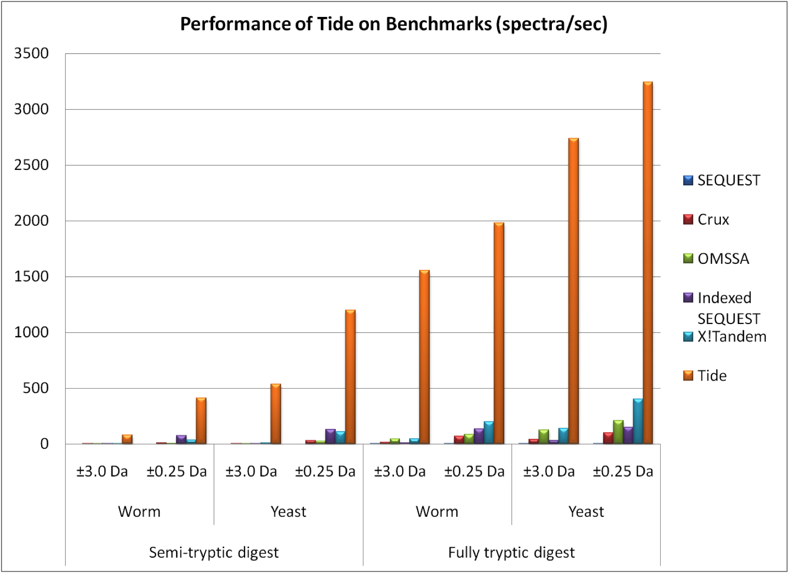

Tide: Faster Database Searching for Peptide Identification From Tandem Mass Spectra
Introduction
Tide is a tool for identifying peptides from tandem mass spectra. It is an independent reimplementation of the SEQUEST algorithm, which identifies peptides by comparing the observed spectra to a catalog of theoretical spectra derived in silico from a database of known proteins. The immediate ancestor of Tide is Crux, but Tide has been completely re-engineered to achieve a thousandfold improvement in speed while exactly replicating SEQUEST XCorr scores.
 Our published paper provides more detail on how Tide works. If you use Tide in your research, please cite:
Benjamin J. Diament and William Stafford Noble. “Faster SEQUEST Searching for Peptide Identification from Tandem Mass Spectra.” J. Proteome Res. DOI: 10.1021/pr101196n. 2011.Please note that Tide is a research project, and not currently commercial-quality software. Accordingly, no graphical user interface is provided, binaries are only distributed for a few platforms and many user options that are available in SEQUEST and Crux are not yet implemented. If there are specific features that you would like included in future releases of Tide, we would love to hear from you. Please contact Benjamin Diament.
Tide Components
tide-indexConvert a FASTA format file of protein sequences into a format that can be read efficiently by tide-search.tide-searchMatch the given set of observed spectra with the peptides from the protein database. msconvertStandalone conversion utility based on the ProteoWizard project. Converts a file of tandem mass spectra into the format used by tide-search.tide-resultsUtility to display binary Tide output in one of several display formats. read-spectrumrecordsStandalone utility to display in human-readable form the contents of a file of spectra as used by Tide.
Demonstration Scripts and Sample Data
The Tide distribution includes scripts and sample data demonstrating the use of the Tide.To execute the demonstration scripts, from the tide directory run:
yeast.fastaSample S. cerevisiae protein sequence database yeast-02-10000.spectrumrecordsSample S. cerevisiae MSMS spectra yeast-demo-index.shShort shell script for generating an index based on yeast.fasta for use with tide-searchyeast-demo-search.shShort shell script for searching sample S. cerevisiae spectrum data worm.fastaSample C. elegans protein sequence database worm-06-10000.spectrumrecordsSample C. elegans MSMS spectra worm-demo-index.shShort shell script for generating an index based on worm.fasta for use with tide-searchworm-demo-search.shShort shell script for searching sample C. elegans spectrum data ./yeast-demo-index.sh ./yeast-demo-search.sh ./worm-demo-index.sh ./worm-demo-search.shThe output ofyeast-demo-search.shwill be inyeast.results. The output ofworm-demo-search.shwill be inworm.results.
Download Tide
Precompiled Tide binaries are available for 32-bit and 64-bit Linux. You can download Tide here once you agree to the license agreement and obtain a password here. Tide is available as part of the Crux software toolkit. Crux and Tide are freely available for academic use. Crux can be licensed for commercial use.
More information
To receive announcements of new versions of Tide, sign up for the Crux users mailing list. For support, and to discuss Tide with other users and the developers, sign up for the Crux users Google group. Tide is in active developement, and we welcome your suggestions for features and improvements.
Tide was written by Benjamin Diament, with contributions from Eva Baker and input from Charles Grant, under the supervision of Prof. William Stafford Noble in the Department of Genome Sciences at the University of Washington, Seattle.
|
Maintenance and development of Tide is funded by the National Institute of Biomedical Imaging and Bioengineering grant NIH/NIBIB R01 EB007057. |
 |
Please send comments and questions to Benjamin Diament.